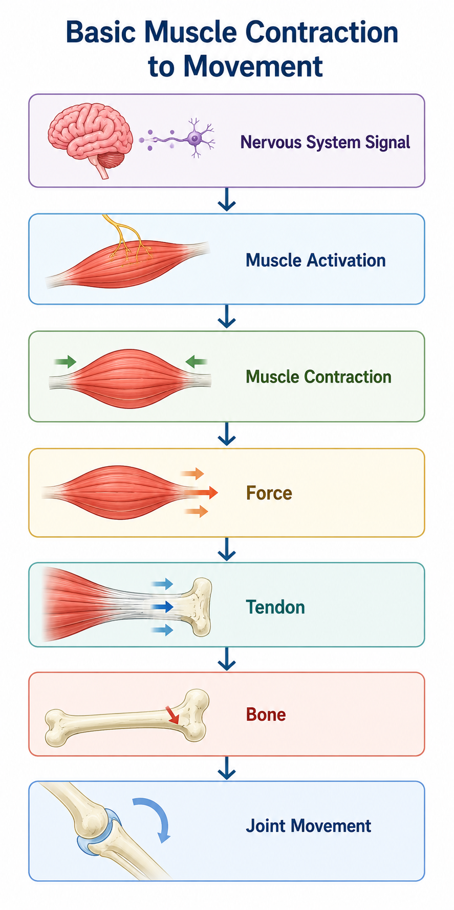
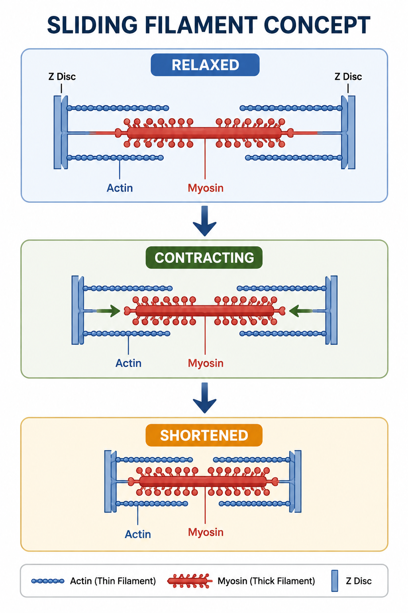
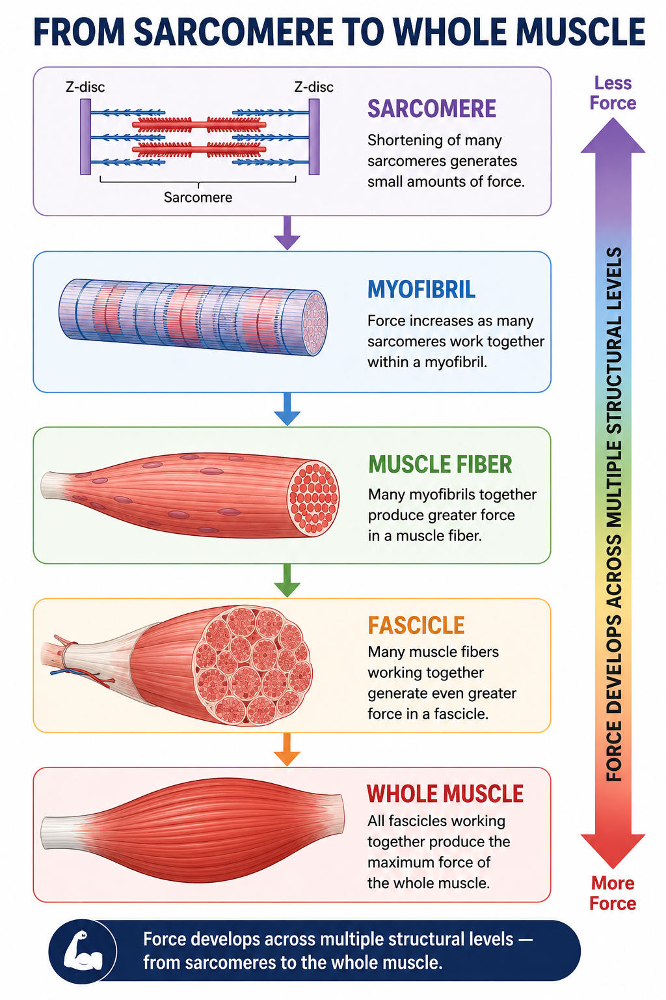
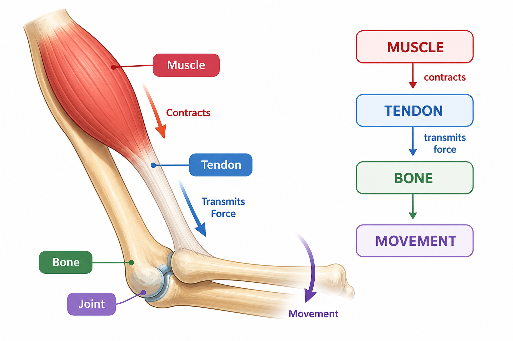
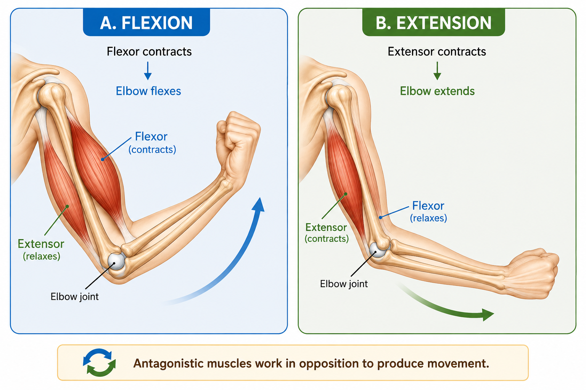
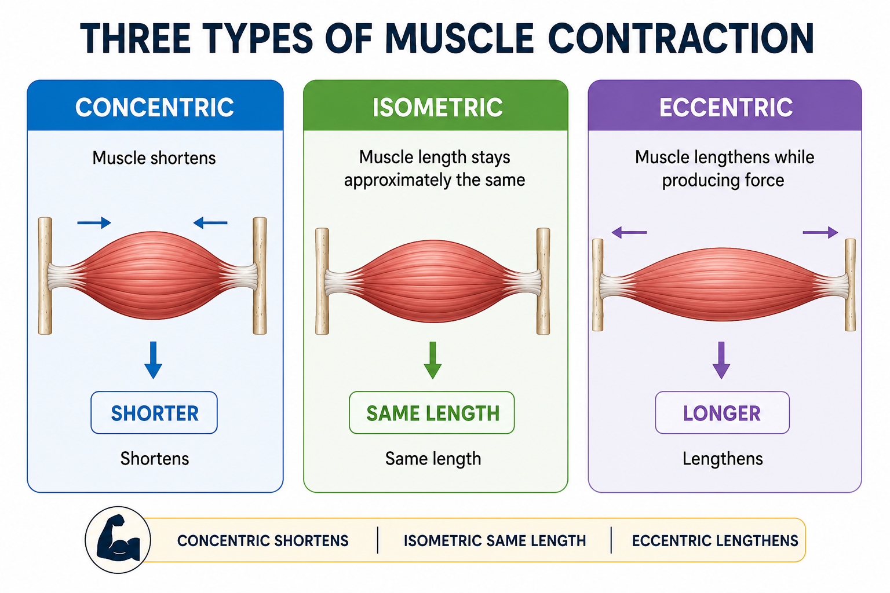
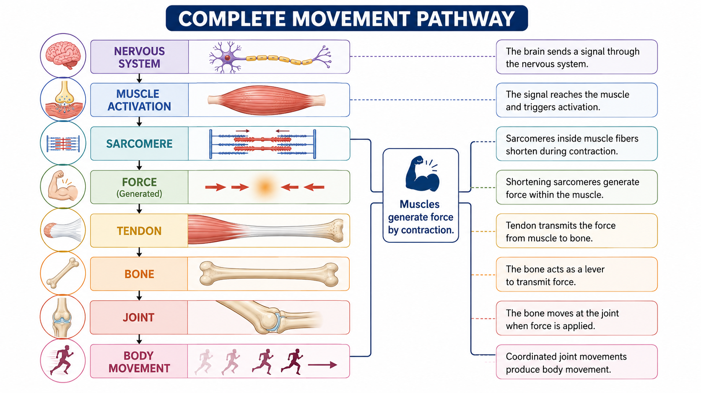

Skeletal muscles produce movement by contracting and generating force. This force is transmitted through tendons to bones, allowing bones to move around joints.
📑 Table of Contents
- 💪 How Muscles Produce Movement
- ⚡ Muscle Activation and Contraction
- 🔬 Sliding Filament Mechanism
- 🧬 From Sarcomere to Whole Muscle
- 🦴 Role of Tendons in Movement
- 🔄 Muscles Work Across Joints
- ↔️ Antagonistic Muscle Action
- ⚙️ Types of Muscle Contraction
- 🧠 Putting It All Together
- 📌 Key Concepts
- 🧠 Quick Revision
- 📚 Key Terms
- ❓ Practice Quiz
💪 How Muscles Produce Movement
Skeletal muscles produce movement by contracting. When a skeletal muscle is activated by the nervous system, its muscle fibers develop tension.
Because skeletal muscles are attached to bones through tendons, the force generated by contraction can be transmitted to the skeleton.
When this force pulls on a bone, the bone can move around a joint, producing body movement.
Muscle contraction → Force → Tendon → Bone → Joint movement

⚡ Muscle Activation and Contraction
Skeletal muscle contraction begins when the muscle receives a signal from the nervous system.
The signal activates the muscle fibers, leading to interaction between the contractile proteins actin and myosin.
This interaction produces tension within the muscle fiber.
📌 Key Terms
- Muscle activation: The process by which a muscle is stimulated to produce force.
- Muscle contraction: The development of tension by the muscle.
A muscle contraction does not always mean that the entire muscle becomes visibly shorter. A muscle can produce tension while shortening, remaining at approximately the same length, or lengthening under load.
🔬 Sliding Filament Mechanism
Inside skeletal muscle fibers, myofibrils contain repeating sarcomeres. Each sarcomere contains thin actin filaments and thick myosin filaments.
During contraction, myosin interacts with actin and causes the filaments to slide past one another. The individual filaments do not simply become shorter.
Their relative sliding causes the sarcomere to shorten. As many sarcomeres shorten together, muscle fibers develop tension and contribute to whole-muscle contraction.
The sliding of actin and myosin causes the sarcomere to shorten.

Figure 4.2 — Sliding Filament Concept
🧬 From Sarcomere to Whole Muscle
A skeletal muscle contains several levels of organization. Changes at the smallest level can contribute to force production at larger levels.
When many sarcomeres shorten and develop tension, that force is transmitted through the larger structural components of the muscle.

🦴 Role of Tendons in Movement
Skeletal muscles are connected to bones through tendons. When a muscle contracts, the tension generated by the muscle is transmitted through the tendon to the bone.
Because muscles can pull on bones but do not push them, the direction and arrangement of muscle attachments are important for controlling movement.
Tendons transmit the force generated by muscles to bones.

🔄 Muscles Work Across Joints
Most skeletal muscle movement occurs at joints. A muscle produces force and, through its attachment to bones, can change the position of a bone around a joint.
The location of a muscle's attachment and the direction in which it pulls influence the movement that occurs.
Muscles create movement by pulling on bones across joints.
↔️ Antagonistic Muscle Action
Many movements are controlled by pairs or groups of muscles that produce opposing actions.
An antagonistic pair consists of muscles that produce opposite movements at a joint. When one muscle is primarily responsible for a particular movement, the opposing muscle can relax or act in the opposite direction when the reverse movement is required.
Flexion
Flexor contracts
↓Elbow flexes
Extension
Extensor contracts
↓Elbow extends

⚙️ Types of Muscle Contraction
Muscles can produce force in different ways depending on whether their length changes during the contraction.
Concentric
The muscle shortens while producing force.
ShortensIsometric
The muscle produces tension without a significant change in length.
Approximately same lengthEccentric
The muscle produces force while lengthening under load.
Lengthens
Figure 4.6 — Three Types of Muscle Contraction
| Type | Muscle Length | Force |
|---|---|---|
| Concentric | Shortens | Produces force |
| Isometric | Approximately unchanged | Produces force |
| Eccentric | Lengthens | Produces force |
🧠 Putting It All Together
Muscle movement can be understood as a sequence beginning with nervous system activation and ending with movement of the body.

Figure 4.7 — Complete Movement Pathway
Muscles generate force by contraction, and that force can be transmitted through tendons to bones to produce movement at joints.
📌 Key Concepts
- Skeletal muscles produce force when activated.
- Muscle contraction involves interaction between actin and myosin.
- Sliding of actin and myosin causes sarcomeres to shorten.
- Force generated by muscle fibers contributes to whole-muscle force.
- Tendons transmit muscle force to bones.
- Muscles produce movement by pulling on bones across joints.
- Opposing muscle actions help control movement.
- Contractions may be concentric, isometric, or eccentric.
⚙️ Contraction Types at a Glance
| Contraction | What Happens? |
|---|---|
| Concentric | Muscle shortens while producing force. |
| Isometric | Muscle produces tension with little change in length. |
| Eccentric | Muscle produces force while lengthening. |
🧠 Quick Revision
✅ A nervous system signal activates skeletal muscle.
✅ Actin and myosin interact inside sarcomeres.
✅ Sliding of actin and myosin causes sarcomeres to shorten.
✅ Many contracting sarcomeres contribute to muscle force.
✅ Tendons transmit muscle force to bones.
✅ Muscles pull on bones to produce movement around joints.
✅ Antagonistic muscles help control opposite movements.
✅ Concentric, isometric, and eccentric contractions describe different ways muscles produce force.
Muscles pull. Tendons transmit. Bones move.
📚 Key Terms
❓ Practice Quiz
Ready to test your understanding of how skeletal muscles produce movement?
Review muscle contraction, sliding filaments, tendons, joints, antagonistic muscles, and contraction types.